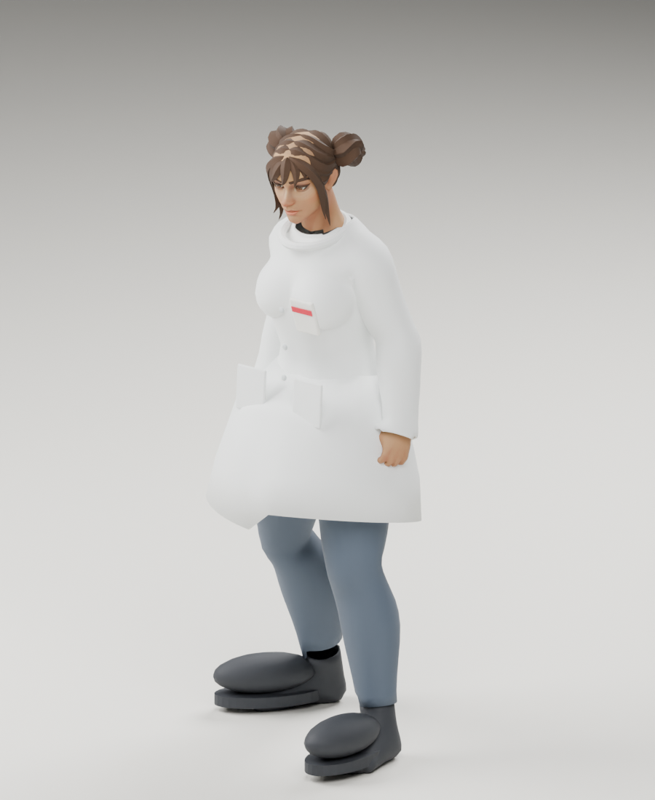
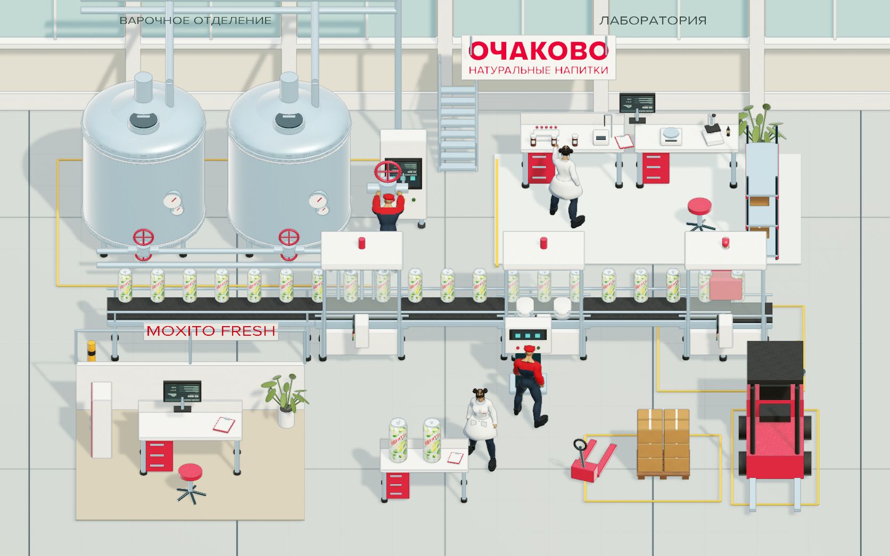
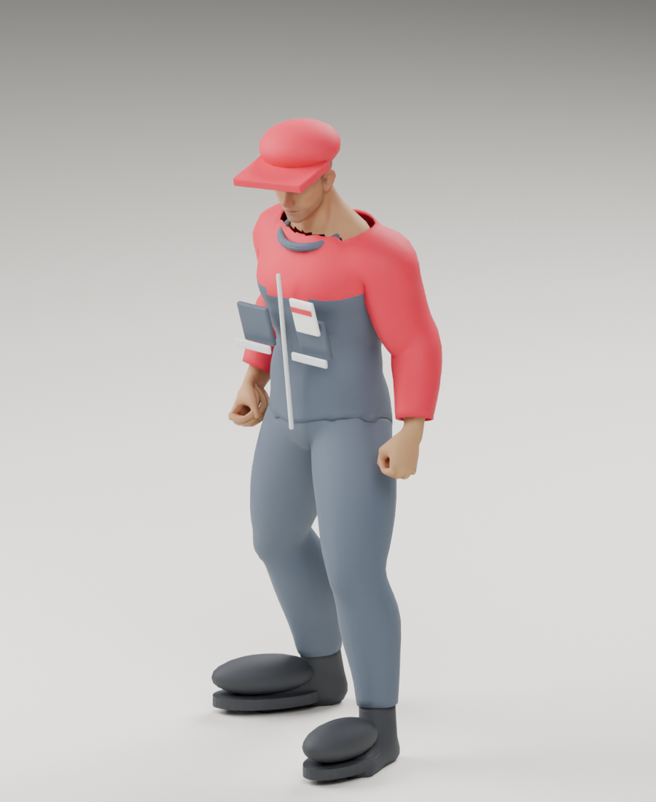

Химик-лаборант
Скелет, одежда, волосы и бейдж. Коллега в лаборатории осматривает колбу.
Поза ходьбы ↗ОЧАКОВО · UNITY WEBGL · 24 ОКТЯБРЯ 2026
Открыть игру на сайте ↗ · Исходники и проверки
Запись настоящей WebGL-сцены в Chrome. Игрок идёт по проходу; камера не следует за ним. Коллеги выполняют рабочие движения, конвейер и индикаторы продолжают работать.
Положение и масштаб камеры не меняются при ходьбе. Колесо позволяет приблизить сцену вручную; Space возвращает общий вид. Пауза останавливает и персонажей, и производственные эффекты.

Базы Quaternius Standard CC0, рабочая одежда и сборка — в Blender. Два образа: химик в халате и сотрудник производства в рабочем костюме. Ожидание, ходьба и три рабочих цикла.

Скелет, одежда, волосы и бейдж. Коллега в лаборатории осматривает колбу.
Поза ходьбы ↗
Рабочий костюм и кепка. Фоновые циклы у пульта и вентиля.
Рабочая поза ↗Происхождение, лицензии и редактируемые Blender-исходники. Это оживлённая локация; профессиональные головоломки пока не подключены.